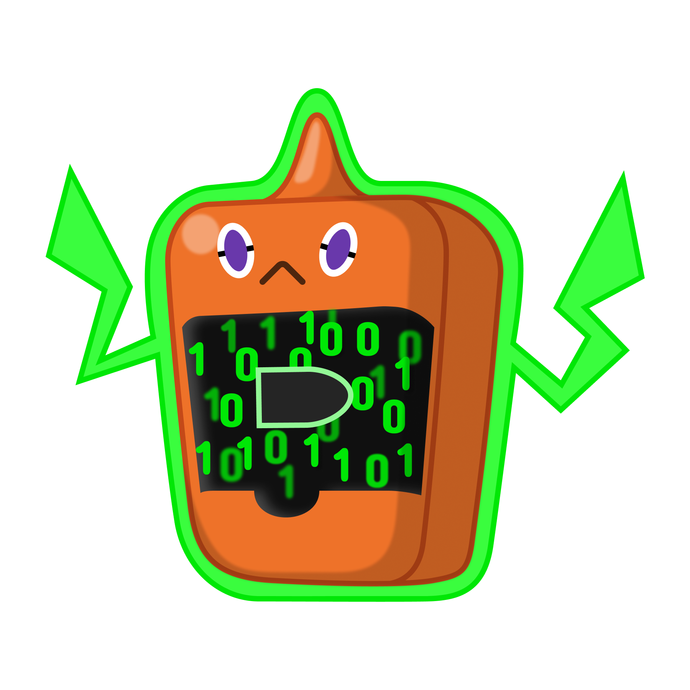

BulletBot
This is a bot for the Code Bullet and Co discord server. It was originally made to fix a webhook role mentioning problem, but the goal was extended to replacing all bots in the server. (Which it currently can't)
Coding style
When planning a feature, keep in mind, that the bot should be stateless. AKA all data should be stored in the database, so the bot can crash or shutdown at any time and resume it's work later like before.
General guide
As a style guide we use this guide from basarat and his typescript book.
Arguments in Utils and Database
All arguments in utils functions and database functions (so all functions defined in /utils and /database) should have their arguments ordered in a following way:
- guild / guildID
- user / userID
- member / memberID
- role / roleID
- channel / channelID
- message / messageID
- others
How to run the bot
Jet is using Typescript 3.4.1 but any version will probably work if you use the tsconfig.json. The bot also needs a bot-config.json file in src\ and respectively out/. The json structure is the following:
{
"version": "v1.0", //the version of the current build
"botToken": "[bot token here]",
"DBURI": "mongodb://localhost", // URI to mongodb cluster
"googleAPIKey": "[google api key for youtube_v3]",
"globalUpdateInterval": 10000,
"cleanInterval": 60000,
"crashProof": {
"file": "BulletBot\\crashProof.time", // the bot will write the current timestamp to this file
"interval": 10000
},
"callback": {
"URL": "[callback ip address for webhook]",
"port": 8080, // port in callback ip
"path": "/webhooks", // results in http://[ip]:[port]/webhooks/[service]
},
"youtube": {
"logo": "https://www.android-user.de/wp-content/uploads/2018/07/icon-youtobe.png",
"color": 16711680,
"name": "YouTube"
}
}There also needs to be a mongoDB cluster running. The minimal data in the cluster is in database settings in collection settings there should be a document with following data.
{
"prefix":"?!",
"defaultEmbedColor":8311585,
"helpEmbedColor":8311585,
"botMasters":[
"[a bot masters user id]"
],
"commands":{
"animal":{
"apis":{
"cat":"https://some-random-api.ml/img/cat",
"dog":"https://some-random-api.ml/img/dog",
"fox":"https://some-random-api.ml/img/fox",
"panda":"https://some-random-api.ml/img/panda",
"red-panda":"https://some-random-api.ml/img/red_panda",
"bird":"https://some-random-api.ml/img/birb",
"pikachu":"https://some-random-api.ml/pikachuimg"
}
}
},
"filters":{
}
}Logo/PFP
The logo/PFP was a fanart from @Aster#4205.
Original:

Vectorised:
